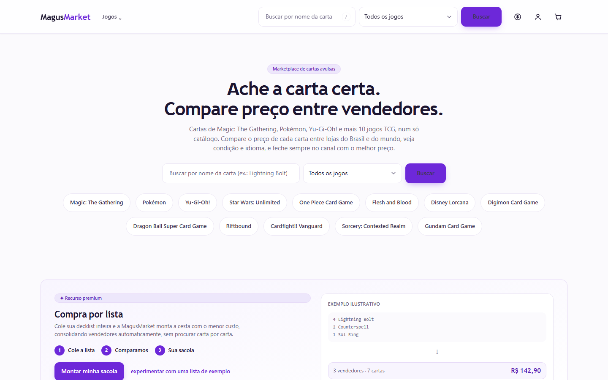
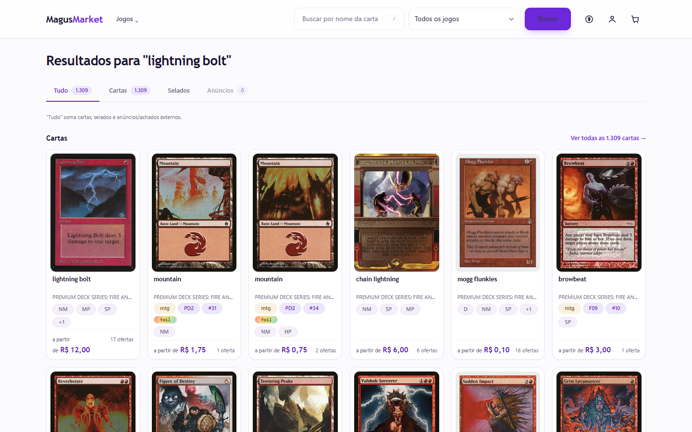
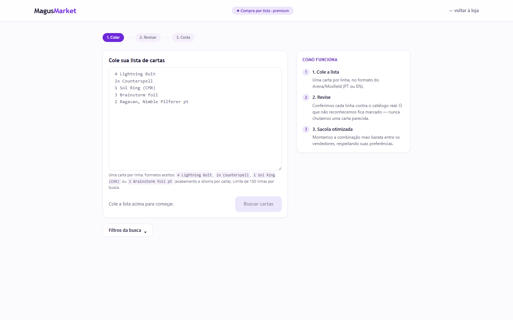

Case 01 · E-commerce platform
Magus platform, a full Magento re-platform, zero code written by hand
A live trading-card marketplace running on Magento, one of the harder e-commerce stacks to work with, rebuilt on a modern stack piece by piece while the store kept selling. The new platform was designed, built and is operated end to end by Red Owl's agent fleet; every line was implemented by agents, with a person setting the architecture, the acceptance criteria and the quality gates.
The challenge
Get off a 1.4-million-line monolith without stopping the store.
Measured directly from the code repository, the platform carried 1.4 million lines of custom and third-party module code, about 280,000 of them written specifically for this store, built on top of Magento's EAV data model, a structure where every product attribute lives in its own database table, which makes the whole system slow to query and hard to change. The challenge was to move to a modern architecture without stopping the store, without hiring an engineering team, and without the founder typing the new code by hand.
The approach
An agent fleet, directed like a strangler fig.
The whole migration was directed through an agentic architecture: a fleet of AI agents organized into roles, a coordinator, execution lanes and an independent auditor, that plan work, build it and check each other's output. The method for the migration itself is known as a strangler fig: the old system keeps running the store while new pieces are built and switched on around it, until the old one can eventually be retired.
Nothing here is one agent typing in isolation. The same rulebook that governs every product this studio builds applied throughout.
How every delivery is governed
Five steps, every time: nothing ships on one agent's say-so.
How it works
The pieces behind the new platform, in plain language.
The migration, in three stages
Stage 1
Legacy Magento monolith
1.4 million lines of custom and third-party module code, the whole store running on one aging platform.
Stage 2
Strangler fig transition
New pieces replace old ones one at a time; Magento keeps serving whatever has not been rebuilt yet.
Stage 3
New stack, in staging
Next.js, the BFF, flat tables and search all running end to end, cutover planned, legacy store still selling in parallel.
The store never stopped selling at any stage.
The moving parts
FRONT END
Next.js
The pages a shopper sees, rebuilt to load fast and to render on the server before they even reach the browser.
MIDDLE LAYER
NestJS + GraphQL BFF
A translation layer, called a BFF ("backend for frontend"), that sits between the new pages and the data, so the front end never has to know where the data actually lives.
CATALOG & PRICE
Flat tables
A simplified, fast copy of the product data, read directly instead of through Magento's slower attribute-by-attribute model.
SEARCH
Elasticsearch
A dedicated search engine holding 2.4 million documents, refreshed every 15 minutes with a full daily rebuild and an automatic fallback if anything goes wrong.
Catalog matching between sources uses exact rules only: two records are linked because they satisfy a defined rule, never because they merely look alike (fuzzy matching is banned for anything that gets saved). When two sources disagree, the record is set aside for a person to review instead of being written as fact.
Numbers
An operation that keeps running, not a one-time count.
0
lines written by hand, still, across the whole migration
2,200+
automated tests green, on a typical day
290k
catalog items reconciled, 13 card games
15 min
search index refresh cycle, daily full rebuild
The audit, to scale
1 error found across 48,062 audited items. The tick above sits almost on top of zero, because the error rate is too small a fraction to draw visibly at this scale. That is the point.
Screenshots
The storefront, as shoppers use it today.



How it was verified
Why the catalog can be trusted.
EXACT RULES, NOT GUESSES
Records from different sources are linked by exact matching rules only. The system is never allowed to guess that two records probably refer to the same card; if a rule does not match exactly, the record waits for a person.
HIDDEN TEST CASES
The visual audit of the catalog, which checks that a product's picture actually matches its label, is seeded with hidden test cases the auditing AI cannot recognize as tests. If it starts inventing answers, these traps catch it before the result reaches anyone.
AUDITED, NOT ASSUMED
The catalog was checked item by item against its original sources: 48,062 items audited, one real error found.
STATUS TODAY
The new platform runs in a staging environment, tested end to end, with a production cutover planned. The legacy store keeps selling in parallel throughout the transition, so no live sale depends on the new platform yet.